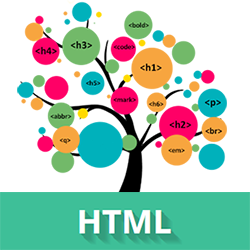

 HTML- текст представлен в спецификации тегами для форматирования и группировки текста. Теги представляют собой контейнеры для текста и не имеют визуального отображения.
Теги для форматирования текста несут смысловую нагрузку и обычно задают для текста, заключенного внутрь, стилевое оформление, например, выделяют текст жирным начертанием или отображают его шрифтом другого семейства (свойство font-family).
Грамотно отформатированный текст дает понять поисковым системам, какие слова несут важную смысловую нагрузку, по каким из них предпочтительно ранжировать веб-страницу в поисковой выдаче. Вся текстовая информация, отображаемая на сайте, размещается внутри тега body.
Заголовки являются важными элементами веб-страницы, они упорядочивают текст, формируя его визуальную структуру. Теги h1...h6 должны использоваться только для выделения заголовков нового раздела или подраздела. При использовании заголовков необходимо учитывать их иерархию, т.е. за h1 должен следовать h2 и т.д. Также не допускается вложение других тегов в теги h1...h6.
Заголовок самого верхнего уровня, на странице рекомендуется использовать только один раз, по возможности частично дублируя заглавие страницы. Тег h1 должен быть уникальным для каждой страницы сайта. Рекомендуется прописывать тег в начале статьи, используя ключевое слово в тексте заголовка. Размер шрифта в браузере равен 2em, верхний и нижний отступ по умолчанию 0.67em.
Им обозначаются подзаголовки тега h2. Размер шрифта в браузере равен 1.5em, верхний и нижний отступ по умолчанию 0.83em.
Показывает подзаголовки тега h2. Размер шрифта в браузере равен 1.17em, верхний и нижний отступ по умолчанию 1em.
Обозначают подзаголовки четвёртого, пятого и шестого уровня.
Размер шрифта в браузере равен 1em / 0.83em / 0.67em, верхний и нижний отступ по умолчанию
1.33em / 1.67em / 2.33em соответственно.
Для всех тегов доступны глобальные атрибуты.
Задаёт полужирное начертания шрифта. Выделяет текст без акцента на его важность.
Для тега доступны глобальные атрибуты.
Отображает шрифт курсивом, придавая тексту значимость.
Для тега доступны глобальные атрибуты.
Отображает шрифт курсивом.
Для тега доступны глобальные атрибуты.
Служит для выделения фрагментов программного кода. Отображается моноширинным шрифтом.
Для тега доступны глобальные атрибуты.
Отмечает фрагмент как вводимый пользователем с клавиатуры. Отображается моноширинным шрифтом.
Для тега доступны глобальные атрибуты.
Применяется для форматирования аббревиатур. Браузером обычно подчеркивается пунктирной линией.
Расшифровка сокращения осуществляется с помощью атрибута title, она появляется при наведении
курсора мыши на текст.
Для тега доступны глобальные атрибуты.
Используется для замещения текущего направления текста, т.е. текст в теге
отображается зеркально.
Для тега доступен атрибут dir.
Разбивает текст на отдельные абзацы, отделяя друг от друга пустой строкой.
Браузер автоматически добавляет верхний и нижний отступ, равный 1em,
при этом отступы соседних абзацев «схлопываются».
Для тега доступны глобальные атрибуты.
Переносит текст на следующую строку, создавая разрыв строки. Для тега доступны глобальные атрибуты.